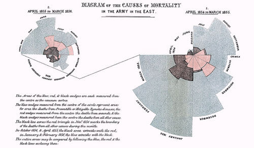

你好，欢迎来到《医学通识50讲》，我是薄世宁。
上节课，咱们讲了麻醉。
麻醉让医学很多治疗技术，尤其是外科手术得到了发展。
但是，病的恢复却不只是诊断、治疗这么简单。护理是不可缺少的另外一项技术。
在很多人眼里，护理不重要。决定治疗效果的是医生的技术，病治得好不好，就看医生那一刀。
真的是这样吗？
统计学家——南丁格尔
其实，想知道护理的重要很简单。那就看看，有护理和没护理有什么区别。
我找到了一个数据。这就是1854年克里米亚战争中，英军伤员死亡率对比。
当时，英军有军医，但是没有专业的护士，伤员死亡率在42%以上。
有了专业护理以后，伤员死亡率一下子降到2.2%。也就是说，没护理以前100个伤员要死40多个，有了护理，只有2个死亡。
创造这个奇迹的人就是南丁格尔。
南丁格尔咱们太熟悉了——“提灯女神”。国际护理的最高奖是南丁格尔奖，每年5月12日的国际护士节，就是她的生日。
但是，南丁格尔的另外一个身份你可能不熟悉——统计学家。
南丁格尔分析了克里米亚战争中英军的死亡原因。发现，真正在战场上战死的士兵不多，反而大部分死亡，是战地恶劣的卫生条件和缺乏护理导致的。
她把这个情况做成了一张图，并用它说服了军方高层，这才把专业护理团队带入战地医疗。
这个图的形状像一朵玫瑰花，所以也叫“玫瑰图”。

就这样，南丁格尔带着专业培训过的38名护士，改善卫生条件，开展专业护理。伤员死亡率迅速降低为没有护理时的1/20。这是一个令人震惊的数字。
所有的文献和资料上，都在强调南丁格尔身上的关爱精神，这点没错。
但是，我认为她更伟大的地方还有三点：
第一，她证明了治疗并不只是吃药和手术。医生不是医疗的全部，没护理不行。
第二，护理也并不只是关怀，它更是一门技术。
第三，她开创了专业化护理教育。护理从学徒制转变为学校教育。
今天，护理已经成为一门独立的学科，是独立于医生之外的。
在我国，护理学是一级学科，与临床医学平行。目前，我国有145所高校招收护理本科，其中22所设置了护理学博士点。
作为一名临床医生，我怎么看待护理的作用呢？回答这个问题之前，咱们先回忆一件事。
护理：决定医疗质量的关键因素
曾经有一项风靡社交网络的公益活动——冰桶挑战赛，可能你还有印象。
就是拿一桶一桶的冰水，自己把自己浇个透心凉，体验逐渐被冻住的感觉。
当时很多名人都参加了，包括美国前总统奥巴马，还有罗胖。
这个活动的目的，是呼吁人们认识并关爱渐冻人。
渐冻人是一种运动神经元病，属于罕见病，在中国的发病率大约是3/10万。物理学家霍金得的就是这种病。
病人逐渐出现肌肉无力，最后所有的肌肉都瘫痪了，就像被“冻”住了一样，只有眼睛能动。目前对这种罕见病没有特效药，也就是说医生无计可施。
最可怕的是，病人的意识和皮肤的感觉正常，哪里不舒服，想做什么，心里都明白但是自己却表达不出来。负责呼吸的肌肉瘫痪，只能靠呼吸机活着。
得了这种病，谁能提供最合适的治疗呢？
既然医生没有更好的治疗方法，护理就成了最好的治疗。
护士要随时给病人吸痰，定时翻身拍背，帮助病人活动肢体。还要给予精确的营养，监测病人全部的生命数据，随时观测呼吸机运转。同时还要跟病人多说说话，否则，病人会出现严重的心理问题。
在我们科，就住着这样一位渐冻人。
根据统计，有一半渐冻人会在3年内死亡，90%活不过5年。我们科的这位病人，已经存活了8年。
8年来，她身上没有一块儿褥疮。气管切开插上呼吸机，不用任何消炎药，就靠吸痰，病人的肺也很少感染，而且重要脏器都没问题。
我预测，在专业护理下，这个病人仍然可以存活很多年。
这个病例告诉我们关于护理的第一层认知：护理是决定医疗质量的重要因素。
护理：医疗体验的核心环节
无论一个医院的医生有多牛，医院多么多么有名气，你肯定不想遇到一个面无表情的护士，命令你脱下裤子，然后，把长长的针头一针打进屁股里。
护理更能体现就医体验。
对于护理认知的第二个层面：护理是医疗体验的核心环节。
我们来到医院，第一个接触和最后一个接触的人是谁呢？是护士。
医疗服务流程的主要界面是护士；和病人打交道时间最多的是护士；病人躺在病床上呼叫，第一个应答的也是护士。
所有这些环节，都是医疗体验。
护理，就是医疗体验的核心环节。
所以，一个态度不好的护士会影响到整个医疗体验，让病人产生不好的感觉，甚至让你对整个医疗产生误解。
病人来医院看病，不仅希望治好病，同时，更希望被尊重、被理解、被体贴。这种体验决定了病人的信任度和满意度。
比如你去医院打针，护士带着口罩进来了，啥也不说，“咣当”把门一关。你的恐惧肯定一下子就冲上头顶，紧张得不行。
所以，一个有经验的护士会笑着先说一句，“为了您的隐私，咱们把门关上好不好？”。
这么一句话会让你的感受立刻不一样。这就是体验。
关于护理，我们讲完了医疗质量和医疗体验。这两个层面，很可能和你理解的护理差不多。
但是，对于护理的第三个层面，可能就要打破你的认知了。也就是这节课的题目：护理，既是医嘱执行者，又是安全代言人。
护理：医疗流程的监督者
护理怎么成了医疗安全的代言人呢？其实，这点甚至连很多医生也没有意识到。
《罗辑思维》有期节目讲过一个故事，我拿来借用一下。
2005年，美国发生过一起医疗事故。
一位有经验的外科医生在给病人做手术的时候，病人突然呼吸停止。
这个时候，医生必须赶紧停止手术，立刻给病人气管插上管，这样才能保证呼吸，才能让各个器官不缺氧，才能救命。
但是，这个病人气管插管非常困难。
医生多次尝试都失败了。其实，这个时候最好的办法是别插了，赶紧把气管切开。气管切开同样能供上氧，防止窒息。
但是在这个病例中，尽管有人提醒，但是这个医生还是反复尝试插管。最终，他错过了最佳时机，病人因为缺氧变成植物人了。
这么有经验的医生犯了这种错误，是他不知道后果吗？他肯定知道。
但是在紧急情况下，过多地关注在操作上，就会忽略其他的问题，比如时间。大脑能耐受的缺氧时间只有4-5分钟，错过了时间就等同于伤害。
这通常不是技术问题，有个词叫做“窄化效应”，说的就是这个问题。每个人都有窄化效应，医生也不例外。
所以，必须有人对医疗过程进行监督，而且必须根据紧迫程度，不断地发出级别越来越高的警示。这样才能保证流程安全。作出监督和警示的人就是护士。
在ICU，我们也会经常遇到紧急气管插管的病例。
护士不仅要给药、准备器械。同时，也会不断地发出警示。
比如，护士会说，病人氧合不好，要不要气管插管？东西已经准备好了。
如果医生插不上，病人的血氧就会下降。这个时候护士会不断地说，现在血氧已经不到90%了，现在是88%，85%。
意思是，医生需要立刻停下来，给病人充足的氧气后，再去试。
如果医生反复插管失败，护士还会说，要不要叫麻醉科？
如果医生确实插不进去了，护士会说，已经叫了麻醉医生和耳鼻喉医生，还是准备紧急气管切开吧。
这可不是多管闲事。所有这一切的目的，就是相互监督，保证流程安全。
一个人可能会出错，如果有了监督，只有各个环节同时出错才会发生事故。但是，几率就会大大降低。
现代医疗制度规定，协作工作时，如果护士没有履行监督的责任，出了问题，医护必须同时接受处分。
从这个角度来说，护理可不仅是医嘱执行者，同时还是保证医疗安全的代言人。
最后再补充一句，刚才讲渐冻人的时候提到了霍金。霍金被确诊后存活了56年。
那你一定想知道，霍金是不是用了什么特效药呢？
是，这个“特效药”就是护理。
霍金拥有一个高效的护理团队，护理他的生活以及医疗的每个细节。告诉你一个秘密：霍金的第二任妻子，就是一名护士。
下节预告
如何在活体获取信息，是医学的难题。下一讲，我们讲讲用最小干预获取信息的起点——X射线。